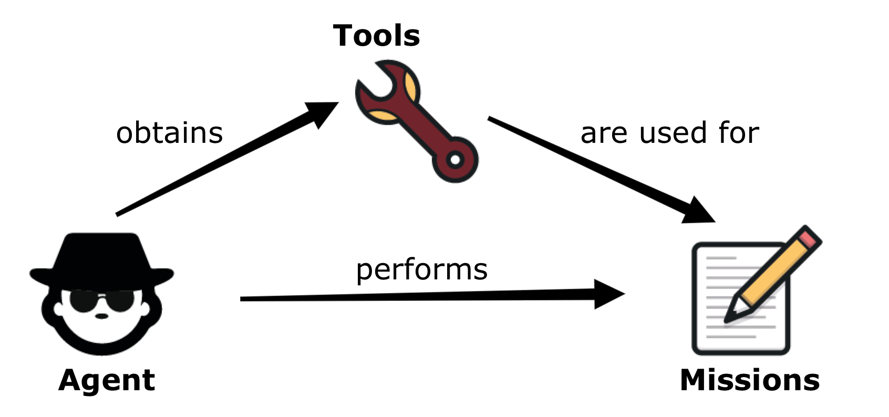

Start using now!
You need somewhere to start. A Quick Setup & Use Guide is all you need
Setup
Maven
Just copy the following into the dependencies section of your pom.xml
<dependency>
<groupId>io.magentys</groupId>
<artifactId>cherry</artifactId>
<version>1.0.2</version>
</dependency>
Latest vesions can be found here: Maven Central
Gradle
Just copy the following into your build.gradle
compile group: 'io.magentys', name: 'cherry', version: '1.0.2'
Ivy
Just copy the following into your ivy.xml
<dependency org="io.magentys" name="cherry" rev="1.0.2"/>
SBT
Just copy the following into your build.sbt
libraryDependencies += "io.magentys" % "cherry" % "1.0.2"
Use
Steps:
1. Import statically in your class:
import static io.magentys.AgentProvider.agent;2. Create an Agent (e.g. in your @Before of your tests)
Agent agent = agent();3. Assign tools (objects of any type e.g. WebDriver, dbClient etc.):
agent.obtains(webDriver, dbClient);4. Store values (objects of any type) to his memory using a unique id (String):
agent.keepInMind("unique.key", new MyWonderfulType());and retrieve them :
MyWonderfulType myType = agent.recalls("unique.key", MyWonderfulType.class);5. Create a Mission with a result:
Mission<String> retrievalOfUsername = new Mission<String>() {
@Override
public String accomplishAs(Agent agent) {
WebDriver webDriver = agent.using(WebDriver.class);
String visibleText = webDriver.findElement(By.cssSelector("#username").getText();
return visibleText;
}
}
and perform as follows:
String username = agent.performs(retrievalOfUsername);6. You can perform Missions without a result:
Mission<Agent> importantMission = new Mission<Agent>() {
@Override
public Agent accomplishAs(Agent agent) {
/*
you code goes here
*/
return agent;
}
}
In that way you can chain actions together:
Agent salesPerson = agent().obtains(sshClient, restfulClient, webDriver, dbClient);
agent.performs(sshAuthentication, restfulAuthentication, webAuthentication, dbAuthentication); // all of them are missions
// or
Agent Tom = agent();
Tom.obtains(aPrinter(), and(aScanner()))
.andHe( scansThe("important Document"), and(printsTheDocument()));
For more details please checkout our Documents & Examples Book!
Mission Pattern
A Pattern that simplifies and modularises your testing code.
Agent + Tools = Missions
Cherry JVM is a java framework which implements the Mission Pattern.
The 'Mission Pattern' comprises of 3 main concepts:
- Agent: the entity responsible for missions
- Mission: a task or a set of tasks that can (optionally) return a result
- Tools: any object (e.g. instance of Webdriver etc.) that the Agent can use to accomplish their Missions

Mission Pattern explained here!
Features
Check out some of features that we have. To know more about features of Cherry JVM, continue reading our documentation and check our available components.
-
Web & Rest APIs testing
Using cherry-webdriver and cherry-rest you can test any website or Restful API.
-
Customizable
You can easily customize it to create your own tools.
-
Modularized
Split into modules (e.g. cherry-java8, cherry-rest etc) so you can 'cherry pick' according to your testing needs.
-
Clean code & DSL
You can find our code well organized, commented and readable.
-
Reporting
Meaningful reporting.
-
Open Source
Feel free to contribute.
Modules
Make use of some our out-of-the-box Missions we prepared for you.
Feel free to 'Cherry-pick' the ones you need in your project.
-
Cherry (core)

This is our core module containing all the basic entities of Mission Pattern: Add
<artifactId>cherry</artifactId>in your dependencies -
Cherry-Java8

Fun of Java 8 lambdas (λ) & ComposableFutures?... Then introduce
<artifactId>cherry-java8</artifactId>in your dependencies -
Cherry-WebDriver

For Web automation use our Web Screens and & Hamcrest Matchers for element attributes. Just introduce
<artifactId>cherry-webdriver</artifactId>in your dependencies -
Cherry-Rest

Test Restful APIs with our Rest missions.
Just add
<artifactId>cherry-rest</artifactId>in your dependencies -
Cherry-Fest

Need to to Test a Java Swing App?
Then add
<artifactId>cherry-fest</artifactId>in your dependencies